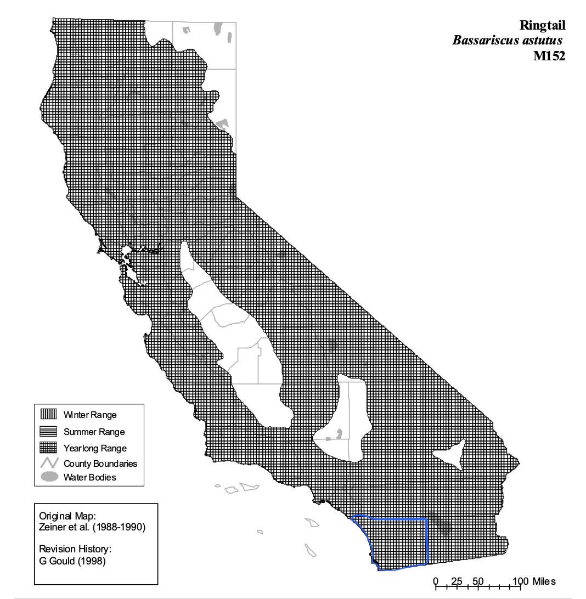
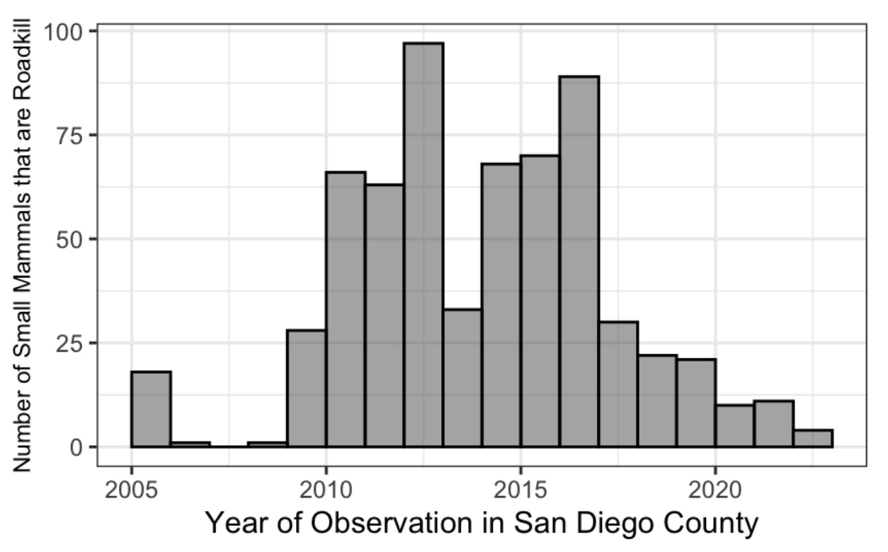
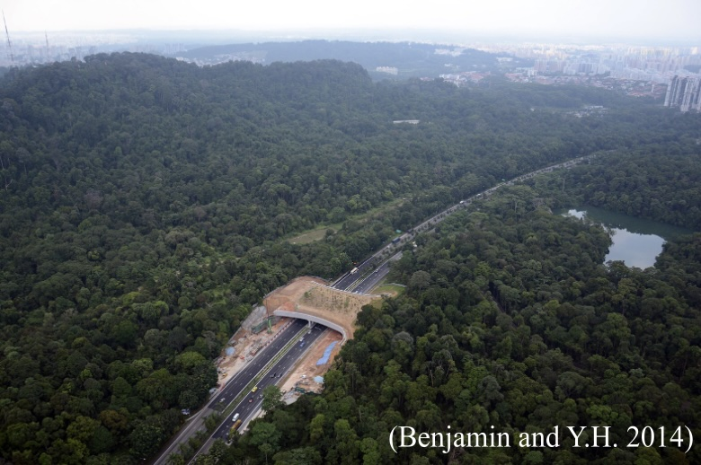
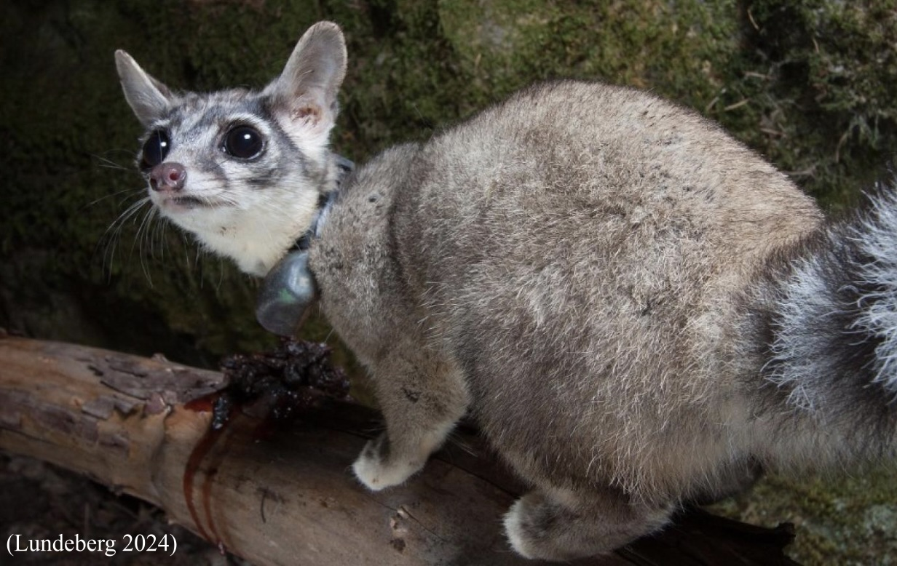
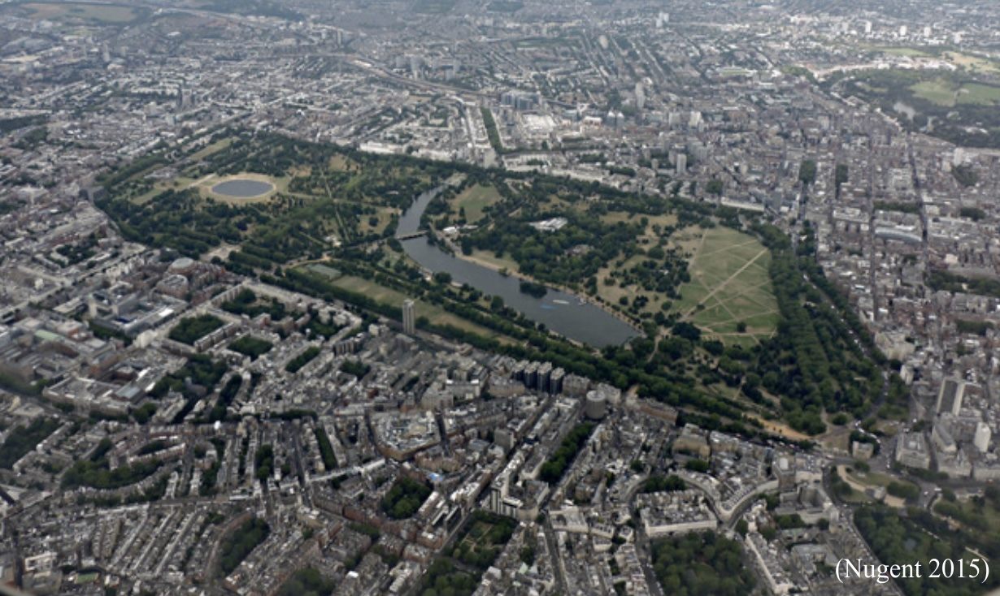

Ringtail Case Study
Case Study: Conservation of Ringtails in San Diego County
Aiden Roach
November 19, 2024
Introduction
While San Diego is well known for its agreeable weather and sandy beaches, we have to give credit to the biodiversity that helps contribute to such a beautiful area. Due to the extensive and rapid urbanization of San Diego County, local species like the ringtail are facing both loss of their habitat and serious, sometimes fatal, vehicle collisions. As the ringtail population declines, San Diego loses its unique biodiversity throughout the County. Example stakeholders can include the San Diego Zoo Wildlife Alliance, the San Diego Natural History Museum, and the Pala Environmental Department. Those most invested in the conservation of ringtails are local biological researchers, such as those at the San Diego Wildlife Alliance and those at the San Diego Museum of Natural History. How should San Diego County best preserve the local population of Ringtails (Bassariscus astutus)? Before conservation plans can be made for the future, the past and current ecology, threats, and policy surrounding ringtails needs to be understood. With that foundational understanding, three alternative solutions will be presented and analyzed to determine the most beneficial method for ringtail conservation in San Diego County.
Background
Literature Review
The ringtail, (Bassariscus astutus), prefers a select few habitats and yet they have been recorded in multiple locations across North America. A map of their yearlong range within the state of California is shown in Figure 1 below. Their distribution spans from the Southwest United States of America, especially the Chihuahuan desert. Within this desert region the ringtail prefers the igneous hills and grasslands (Ackerson and Harveson 2006). Additional habitat types used by ringtails across the Southwest United States include palm riparian zones and rocky oak forests (Escobar-Flores et al 2012). Not only is the ringtail found in the United States of America, but additionally in Mexico. Because of similar climatic conditions, the ringtail inhabits Northern Mexican islands and Baja California while still occupying arid and rocky terrains (Escobar-Flores et al 2012). Despite such a large area, little is known about the ringtail because of its elusive nature.

Looking further into the preferred habitats, the ringtail home-range provides insight to their social dynamics. The size of the area occupied varied between males and females; average male home-range size is 462 hectares while the average female home-range is 94 hectares (Harrison 2012). Despite these large habitats, all of the territories overlapped at least some. The overlap can vary from 17.5% to 46.6% overlap (Ackerson and Harveson 2006). The purpose of such large home-ranges is to provide a variety of den possibilities. Each ringtail spends an average of 1.3 days in a single den before moving to a new location (Harrison 2012). Since the ringtail prefers arid and broken environments, their dens are strictly natural crevices within the rocky regions (Ackerson and Harveson 2006). Another purpose for such large territories is to provide the ringtail with multiple feeding opportunities.
Within these home ranges, the ringtail consumes a variety of materials. Since the ringtail is omnivorous the diet pattern is broad. Based on multiple scat collections, 78% of the scat is made of plant material while 87% is made of animal material (Ackerson and Harveson 2006). To be specific, the plant material found was typically fruit and the animal material was typically arthropods (Harrison 2012). Not only do ringtails consume fruits and arthropods, but they have also been recorded using both anthropogenic and scavenging sources of food (Allen 2013). Their wide range of diet patterns provides the ringtail with important ecological roles within the food web.
Scientific Basis
Fragmentation of habitats can be intentional or accidental. Some habitats are purposely broken for land use while others are done almost on accident through lack of planning (Hanski 2011). An example of accidental fragmentation could be continually, but minimally, increasing the boundaries of suburban areas over an extended time period. An example of intentional fragmentation could be building a highway through an undeveloped area to connect two isolated towns. By forcing changes in available habitats, especially through urban development, the surrounding biological dynamics change as well (Habitat fragmentation…). This change in dynamics presents an opportunity for an increase in competition, both within species and across species.
Not only can a habitat be fragmented by humans, but also by other local species. Typically fragmentation is started by human intervention, but the divide is furthered by interspecies competition. A lack in species biodiversity, caused by competition, causes abundance of other species to decrease even further due to lack of resources (Keng-Lou et al 2017). This feedback loop is further pushed as human development continues to expand into local habitats. As habitats shrink, more and more individuals are forced into closer proximities. This increase in numbers causes higher amounts of competition both within and across species from depleting resources (Habitat fragmentation…).
Not all fragmentation is physically shown. Other examples of fragmentation can come from the behavior of invasive species and from changes in habitat over time. Noise from invasive species can mask the noise of native species, causing changes in native behavior to improve fitness (Hopkins et al 2022). One example could be the invasive species masking the mating call of an indigenous species. In order to find a mate, the indigenous species must now rely on other methods such as expanding the home-range to find a receptive mate’s range. Another possible source of noise pollution could have a human source. Additional noise from anthropogenic sources disrupts the ability of native species to effectively communicate, which causes separation of populations (Hopkins et al 2022). This extra noise has a similar effect as the invasive species’ noises. One more altercation in habitat fragmentation occurs over time. Changes in temporal dynamics alter the structure of local biological dynamics (Keng-Lou et al 2017). If a population of birds were to make yearly migrations, any changes made within the time the birds are away from a particular location can then alter their behavior when they return.
Local ecosystems require delicate predator-prey relationships in order to function the most efficiently. To preserve the health of the ecosystem, it would be most effective to advocate for conservation of all organisms included (Avrin et al 2023). When one species falls, the entire foodweb of the ecosystem can suffer dynamic changes. Often, the cause of dynamic changes and species loss is from a human source, but can also have human solutions. Increases in urbanization often lead to a decrease in overall biodiversity. By creating more thoughtfully planned green spaces, biodiversity can increase throughout these areas (Gallo and Mason 2018). Biodiversity can also be increased on smaller scales. By using native species in residential yards, overall biodiversity for the local area can increase (Smallwood and Wood 2023). However, not all changes in biodiversity occur in short time scales. As climate shifts away from preferred ranges, plant species display physiological stress which inturn makes them more likely to develop stress caused from additional sources. Local plant species support their surrounding broader ecosystems, so their loss can cause a cascade of issues for another species (Thomas et al 2023). Loss of biodiversity is a complex issue that has a variety of both causes and solutions.
While habitat fragmentation and wildlife exposure to urban areas is typically discussed at an ecosystem level, there are also effects to each individual. One major effect is the increased spread of diseases from organism to organism. For example, exposure rates to diseases such as Trypanosoma cruzi do not vary based on location (Brown et al 2010). This means that spread of diseases is not an isolated issue and can happen in any urban area. While diseases spread from individual to individual, over time the impact species’ populations can begin to feel the effects of such diseases. Populations that have experienced a bottleneck, and therefore have a smaller population, are more susceptible to zoonotic diseases. A possible cause of a population bottleneck could be habitat fragmentation which then forces wildlife into confined territories including urban areas (Suzan and Ceballos 2005).
Local Context
Even though the ringtail plays an important role in its ecosystem, there is little information available. Since the ringtail is entirely nocturnal, it is difficult for biologists to effectively study their habits (Ring-tailed Cat). An example of the complexity of ringtail study is in 2003, when examining fragmented areas surrounding western Los Angeles, no ringtails were detected despite the 12 selected study areas (Tigas et al, 2003). In order to better understand how to protect this important species, there needs to be access to updated information on their status. The more money and time dedicated to their research in Southern California, the more in depth understanding we obtain of their ecology. A deeper understanding of their ecology allows San Diego County to implement more effective protective measures.
While roadkill is a common occurrence throughout the United States, there are effects to both the native wildlife and humans driving those vehicles. Across Southern California, including San Diego County, approximately 3,031 vehicle collisions with large mammals were reported between 2016 and 2023. From those collisions there is an estimated cost to the region of about 7,564,185 United States dollars (USD) per year (Shilling et al). Large mammals are not the only ones affected by vehicle collisions. Figure 2 below shows small mammal roadkills in San Diego County that were reported in the California Roadkill Observation System (CROS). The database was provided by Waetjen through personal communication and is therefore unreferenced. While the figure shows a decrease in small mammal roadkill, there are two things of importance to note. First, CROS is mostly a citizen science project. While some data in CROS is provided by sources such as state and federal agencies, the only public population reporting to CROS are those that are aware of the program (Home 2024). Since not every single driver is aware of CROS, there could be roadkill that is not being recorded and is therefore missing from the dataset. The second note is in the time since the observations were recorded San Diego County has built wildlife crossings, such as one over CA-5 that connects Gooden Ranch/Sycamore Canyon and Mt. Woodson (Fisher 2013). It is possible that these wildlife crossings help reduce the number of wildlife and vehicle collisions, but further studies are needed. Within San Diego, ringtails specifically are often found around roads near cliffs, such as the I-8 and State Route 67 (Helping Save..). So, by adjusting roads to provide safety features for wildlife, such as fencing, not only will local wildlife be physically protected but in addition both individuals and the Southern California region will experience reduced costs due to a reduced number of collisions.

Habitat fragmentation is not a new issue, and neither does it affect a single species. Even researchers in the late 20th century recognized the effects urbanization in San Diego County had on the surrounding native ecosystem. Estimates then concluded that, at that time, only 10% of indigenous plants remained (Soulé et al 1992). The effects of habitat fragmentation are not only physical, but occur on a cellular level as well. Instead of creating a physical barrier between populations, studies done on bobcat populations in coastal Southern California show that fragmentation has another effect. Habitat fragmentation does more damage to surrounding species by limiting their genetic diversity (Ruell et al 2012). By limiting their genetic diversity, species can experience inbreeding which then causes physiological issues for the individual. A study done on mountain lions of Southern California showed some effects of inbreeding include abnormal sperm and kinked tails (Huffmeyer et al 2022). In order to preserve the ringtail long enough for biologists to effectively conduct research on them, measures to prevent roadkill and habitat fragmentation would extend the longevity of these local populations.
Policy Context
The first relevant policy to ringtail conservation involves hunting in San Diego County. This policy, titled Protected of Park Animals, focuses on land owned by the County (Protection of… 1972). The first amendment was created in 1972, but the most recent amendment was made in 2023. Within the County of San Diego, the department of Parks and Recreation manages county property which includes ecological reserves. According to this policy, it is unlawful for a person or for an animal a person brings to hunt, trap, and kill any animal (wild or domesticated) within a San Diego park (Protection of… 1972). By putting this code into law, the ringtail is protected directly from human harm. If a person violates this code, they are charged with a misdemeanor and possible additional civil penalties (Protection of… 1972). However, there is no mention of how the department of Parks and Recreation must monitor their parks to enforce this code. So while it is illegal to hunt and trap in a San Diego park there is no method, in this code at least, to enforce this code.
Another code in San Diego County relevant to protecting the ringtail involves dividing land for environmental purposes. This code, titled Environmental Subdivisions, went into effect in 2002, but was amended in 2010 (Environmental Subdivisions 2002). Since the code involves public land it is under the Planning and Developmental Services. For an environmental subdivision to be considered the director of Planning and Developmental Services must be involved. Environmental subdivisions of a land must be assessed and approved based on the conditions outlined in the division. The conditions include: a tentative parcel map, meeting additional conditions outlined in Government Code section 66418.2(b), and the same requirements for a minor subdivision which is outlined in Chapter six, Division one, of Title eight in the San Diego County Code of Regulatory Ordinances (Environmental Subdivisions 2002). The policies that form the foundation of this code in San Diego are specific, which can help ensure a quality area designated for wildlife. However the specificity of the code can prevent possible habitat from being designated as an environmental area if it does not meet these rigorous standards.
Expanding beyond San Diego County, the state of California has policies in place to help protect threatened species. The list of fully protected mammals was created in 1972, but was amended in 2023 to better reflect species that currently need protection. The California Department of Fish and Wildlife is tasked with enforcing the protection of each listed species. Under this code, it is unlawful for a person to take and possess an animal on the full protected mammal list, including ringtails (Fully Protected…1957). While this code does prevent protected mammals from being removed from their environment, except with approval for scientific reasons, the code does not define what makes a mammal protected. Additional guidelines establishing the conditions required for a mammal to require protection can support the protection of more vital species.
Expanding even further, there are federal laws passed that support the protection of threatened and endangered species. The Endangered Species Act was passed in 1973, but this specific primer was published in 2008. The Endangered Species Act is enforced mostly by the federal Department of Fish and Wildlife, but the National Marine Fisheries Service also supplies some support. The Endangered Species Act defends species at risk of extinction and species that will likely become endangered soon (Endangered Species…1973). However, the act does not outline specific methods to quantify the risk level of a species. While the overall goal of the act is to protect threatened and endangered species, the act does not provide a standard by which we can easily categorize a species as threatened or endangered. If we cannot label a species, we cannot use the legal tools available to aid the species in recovery.
Stakeholders
Introduction
To better understand the dynamics of ringtail populations in San Diego County, I will be looking at the stakes held by the San Diego Zoo Wildlife Alliance, San Diego Natural History Museum and the Pala indigenous tribe’s Environmental Department. The San Diego Zoo Wildlife Alliance serves as both an educator for the general public and a model for up-to-date research methods surrounding wildlife conservation. The San Diego Natural History Museum is also an educator for the general public, focusing on the unique ecosystems of southern California and Baja California. The final stakeholder is the Pala indigenous tribe. Their environmental department is responsible for managing environmental projects within the reservation and educating those within the Pala tribe. In addition to examining the stakes held by these individual organizations, I have conducted an interview with J.P. Montagne from the San Diego Zoo Wildlife Alliance and Scott Tremor from the San Diego Natural History Museum. I wanted to interview Montagne to better understand the reality of wildlife conservation. I believed Montagne’s expertise would provide clarity on the reality of creating and implementing protections for species. I believed Tremor’s years of experience would elaborate further on the ecological importance of ringtails, and therefore provide an ecological justification for their conservation.
Stakeholder Analysis
Overall, the San Diego Zoo Wildlife Alliance works to discover and apply relevant knowledge towards the conservation of both plants and animals worldwide (About SDZWA). The recovery ecology department works to monitor and continue to introduce species in the wild (Recovery Ecology 2015). The San Diego Zoo Wildlife Alliance is a 501(c)(3) organization, meaning they rely on donations (Charity Navigator). According to their mission statement, the San Diego Zoo Wildlife Alliance aims to fight extinction of species worldwide (About SDZWA). Their stake in relation to this case study is in supporting the local ringtail population. The San Diego Zoo Wildlife Alliance plays two major roles. First, the Alliance are researchers. Over time they have built a reputable name for having the most up to date science and technology for species conservation. Second, the Alliance are educators. Through multiple outreach events, such as summer camps, the Alliance has educated a variety of people on the importance of conservation (Education). The San Diego Zoo is in Balboa Park which is located in downtown San Diego city. The San Diego Safari Park and most of their research labs are in Escondido which is in the northern part of San Diego County. The Alliance also has research labs and partners worldwide.
Most of the San Diego Zoo Wildlife Alliance’s empirical claims come from their own research. Online they have information about their publications (San Diego Zoo… 2022), library (Library 2016), and journal called “Saving Species”(Saving Species). The only value claim made is their mission and purpose statement (About SDZWA), but an argument can be made that their statement is supported by their actions. Any normative statements are driving their research. For example, the Alliance believes the ringtail should be conserved so they are funding research to explore the best possible route of conservation (Ringtail 2015). Currently, the Alliance is focused on radio telemetry to better understand the movement of the ringtail. A solution the Alliance would propose is to increase and improve wildlife corridors. The Alliance has a high amount of power towards solving ringtail conservation because of their reputation. Despite being a nonprofit organization with the help of their reputation the Alliance has been able to fund multiple large scale research projects over many years.
Overall, the San Diego Natural History Museum focuses on research and educating others about the local species of both plants and animals (About Us 2024). Since San Diego has a rare ecosystem, the chaparral, the museum focuses on the Southern California and Baja California Peninsula. The museum is a part of the American Alliance of Museums, which supports the Natural History Museum’s accreditation (About Us 2024). Additionally, the museum is a nonprofit organization as rated by Charity Navigator (About Us 2024). Since the museum is partnered with the San Diego Zoo Wildlife Alliance for ringtail research, their stakes are very similar. The museum also aims to conserve species to educate future generations. While the museum does perform research, their strength is education. Their accreditation with the American Alliance of Museums gives the Natural History Museum a higher standard of service compared to other museums. Being in a major United States city also allows the museum to educate people beyond those that live locally. Using their specimen collection and library, the museum is able to provide resources for researchers (Consulting Services 2017). The museum also has both permanent and rotating exhibits to provide a unique experience to guests each time they visit. Just like the San Diego Zoo, the San Diego Natural History Museum is located in Balboa Park which is in downtown San Diego city.
The San Diego Natural History Museum’s empirical claims come from their own research and the research they have supported. On their website there is access to their publications, research departments, and consulting services for research (Consulting Services 2017). Similar to the San Diego Zoo Wildlife Alliance, the museum makes value claims in their mission and purpose statements but an argument could be made that their actions support their statements (About Us 2024). Their normative claims are also the drivers of their research and education. The museum also believes that the ringtail should be conserved, so they are partnering with the Alliance to understand the best method of conservation. The museum has a focus on understanding the local ecosystem of San Diego, so conservation of both a local and rare species aligns with the goals of the museum. Based on the information posted on their website, the museum has focused on preventing ringtails from becoming roadkill (Cities and Suburbs 2017). Because of this, the museum would likely support building and enhancing wildlife corridors. The accreditation gives the museum some reputation, however they don’t have as big of a name compared to the Alliance. However, through admission fees, the museum does have enough funding to have financial power in this issue.
The Pala tribe is an American indigenous community in the northern part of San Diego County. Their environmental department is responsible for every environmental aspect within the area including water, air, and species conservation (Pala Environmental…a). The Pala tribe has lived around the San Luis Rey River for many generations, so their stake is protecting their ancestral land. Because of tribal sovereignty, the Pala tribe has its own form of government. They have the ability to design their own environmental department to cater to their own needs. The Pala environmental department is responsible for both conservation of natural resources within their reservation and educating the tribe on the available natural resources (Pala Environmental…a). The largest project from the Pala environmental department is the Habitat Conservation Plan which is being funded by the United States Fish and Wildlife Department. This plan aims to monitor endangered species on the reservation, map wildlife corridors, map changes in vegetation, as well as support educational events for members of the reservation (Pala Environmental…b). The Pala reservation is in the northern region of San Diego County. Traditionally, the tribe followed the San Luis Rey River but has lost some of their land over time.
Looking at their website, there are not a lot of publications or empirical claims (Pala Environmental…b). However, this site looks like it is made more for the general public than for research. There are some value claims on their website discussing the importance of the ecosystems found on the reservation. There are no normative claims on their website. Looking at how large scale the Habitat Conservation Plan is, the Pala environmental department has a lot of motivation to conserve their local ecosystem. They are also getting funding from the U.S. Fish and Wildlife Department, so there could also be a financial incentive. The Habitat Conservation Plan has a section highlighting the importance of wildlife corridors (Pala Environmental…b). What sets the Plan apart from others is that the Plan has a focus on maintaining the wildlife corridors in addition to organizing more. Since the Pala tribe has their own small government, they have more power to make changes within their reservation. However, it could be difficult to make changes at a county level.
Overview of Stakeholder Interviews
The first interview I conducted was with J.P. Montagne from the San Diego Zoo Wildlife Alliance. He is a senior research coordinator for the Alliance’s ringtail project. Montagne has no publications specifically about ringtails, but he does have papers published focused on habitat restoration for other species. The ringtail project is currently ongoing, so there is no information available to the public about the findings of this project. Montagne has been working with the San Diego Zoo Wildlife Alliance for the past 30 years, beginning as a volunteer. Other ecology projects Montagne has worked on with the Alliance include bonobos, horned lizards, and ground squirrels (J.P. Montagne, personal communication, 2024; unreferenced). While reading about the goals of the overall ringtail project team, the general agreement is that habitat fragmentation is the biggest cause of ringtail population decline. There is also a consensus that wildlife corridors would be the most effective option (Ringtail 2015). The second interview I conducted was with Scott Tremor from the San Diego Natural History Museum. He has been working on the ringtail project since 1990 as a volunteer and was officially hired in 2004. As a volunteer, Tremor began recognizing the information gaps surrounding ringtails especially in southern California and has since worked to fill that gap. Because the ringtail project is ongoing he has no publications specifically focused on the species but has worked with other endangered small mammals such as the San Quintín kangaroo rat. Another major project of Tremor’s is the San Diego County Mammal Atlas which he is credited with being the principal author and editor. The ringtail project at the San Diego Natural History Museum began as a study investigating road mortality and solutions to reduce wildlife-vehicle collisions (Scott Tremor, personal communication, 2024; unreferenced).
Discussion
Introduction
In order to best protect the local population of ringtails in San Diego County, the three possible conservation methods will be evaluated using a set of criteria. Option one is to build wildlife corridors to provide a pathway, such as a physical bridge over a busy road, for wildlife to safely move between two isolated areas of habitat. Option two is to increase funding that supports research aimed at understanding the ecology of ringtails. Option three is to build more green spaces, such as parks, in the City of San Diego. The five criteria used to assess each option are cost, equity, merit, flexibility, and reliability. The criteria of cost will evaluate an estimate of how much money is required of each alternative in USD. Equity will evaluate how the alternatives benefit stakeholders, including the general public. Merit will assess how well each alternative addresses preserving the local ringtail population. The criteria of flexibility explores the additional benefits, if any, of each alternative. The final criteria, reliability, looks at the longevity of each alternative. A brief evaluation of each alternative from each criteria is organized in Table 1 below.
Building Wildlife Corridors
As urbanization increases, habitats become more and more fragmented; which isolates populations of species from each other. Wildlife corridors provide safe routes for wildlife to move between these fragmented areas. Corridors can take many forms, but the most common is underpasses or bridges, like the one shown in Figure 3, to assist wildlife with crossing busy roads such as highways (Morse 2024). The underpasses/bridges provide equity to each stakeholder by making roads safer for motorists and wildlife since the chance of wildlife and vehicle collisions is reduced (Morse 2024). The biggest strength of wildlife corridors is the merit they provide to individuals (Table 1). Wildlife corridors help species by increasing food sources, providing protection from both humans and predators, and connecting fragmented populations (Habitat Management … 2004). The target species, ringtails in this specific case, are not the only ones who can use wildlife corridors meaning the use of corridors is flexible (Table 1). A wildlife underpass built in Texas has monitoring cameras showing a variety of species including coyotes, bobcats, raccoons, and opossums using underpasses even if they are still under construction (Morse 2024). Additionally, some studies are showing that birds and mammals use corridors regularly. However, for a corridor to be used optimally, there needs to be an assessment looking at what type of corridor and where the corridor should be located to serve the greatest number of individuals (Habitat Management … 2004). The largest weakness of wildlife corridors is the cost, with a single corridor ranging from 5.5 to 5.7 million U.S. dollars (USD) to construct (Donaldson et al. 2023). However, if the County wants the corridors to be used by wildlife, the high cost may be justified to create a reliable corridor for wildlife (Table 1).

The ringtail research project at the San Diego Zoo Wildlife Alliance was started as an exploration of the effectiveness of wildlife corridors, but the project is still ongoing so there is no definite answer published by the Alliance (Ringtail 2015). The San Diego Natural History Museum has a similar outlook on wildlife corridors. The museum is examining how to prevent ringtails from being hit by vehicles in addition to maintaining genetic diversity between populations isolated by roads (Helping Save…). Similarly to the San Diego Zoo Wildlife Alliance, the museum’s ringtail project is ongoing, so there is no definite opinion of the effectiveness of wildlife corridors published. The Pala Environmental Department has already received funding from the United States Fish and Wildlife Department to implement the Pala Habitat Conservation Plan. A portion of the Habitat Conservation Plan is monitoring the usage of wildlife corridors by wildlife (Pala Environmental … 2019). But, again, this project is ongoing so there is no definite answer published by the Pala Environmental Department.
According to J.P. Montagne from the San Diego Zoo Wildlife Alliance, wildlife corridors are a strong alternative to protecting not only ringtails but other species as well. He argues that we first have to understand where populations are located and where they need to go. After that, he believes we need to provide the structures needed from wildlife to get across highways while preventing roadstrikes. In addition to preventing roadstrikes, maintaining genetic connectivity between populations might be what is needed for ringtails (J.P. Montagne, personal communication, 2024; unreferenced). Scott Tremor from the San Diego Natural History Museum provided a similar perspective as well. He acknowledged that there is very little known about ringtails, but it is known that they are often victims of vehicle strikes because the roads bisect their habitat. In order for highly impacted areas to be identified we must first understand the movement patterns of ringtails, which agrees with Montagne’s statements. Another aspect for wildlife corridors that Tremor mentions is the importance of studies examining the population changes after the corridor has been established. These following studies help to quantify the success of the wildlife corridor to monitor the effectiveness over time (Scott Tremor, personal communication, 2024; unreferenced).
Increase Research
Ecology is defined as the study of relationships between organisms and their surrounding environment. Studies involving ecology provide data that can be applied to large issues, such as species conservation (What is … 2024). Because of research, we are able to prevent species from going extinct highlighting the merit of this alternative (Table 1). Regional research, especially those from local authors, was shown to be a predictor of an improved conservation status (Hu et al. 2018). Research is also a form of communication which can then increase the equity for each stakeholder (Table 1). By attracting public attention to a local issue, the public had an increased awareness of additional local species through forms of media such as reports or news (Hu et al. 2018). Another form of media could be images taken during a study, as shown in Figure 4. One major weakness of ecological research is funding (Table 1). Accredited zoos and aquariums spend about 160 million USD on conservation initiatives each year (Conservation Funding). The flexibility of funding is another weakness (Table 1). Sometimes, finding a substantial amount of funding is the most difficult part of research. There are a variety of factors that affect where funding can go including: a finite source of money, high competition for this funding, relevance of a project to the funding panel, and the deemed “quality” of the research presented to the panel (Meirmans et al. 2019). One source of funding specifically for longer ecological projects is the Long Term Ecological Research program. Previous programs could not financially support long term data collection and analysis, so the Long Term Ecological Research (LTER) program was founded by the National Science Foundation. Research can be funded for 6 years before a renewal proposal is needed for an additional 6 years (Waide 2021). Stable sources of funding, such as the LTER, make research projects a reliable solution to address the conservation of ringtails in San Diego County.

While the San Diego Zoo Wildlife Alliance works to discover and apply relevant knowledge towards the conservation of both plants and animals worldwide, not each method can be supported (About SDZWA). Since the Alliance is a non profit organization, their funding relies on the public in the form of memberships and donations, meaning funding is not always available for the Alliance’s conservation research. The San Diego Natural History Museum faces a similar challenge. Since the Museum is also a nonprofit organization, funding is not always available for long termed projects such as the ongoing ringtail research. The Pala tribe however has focused their funding from the United States Fish and Wildlife Department to other areas of concern such as overall habitat monitoring and hosting education events for the members of the Pala tribe.
Research is not always guaranteed, as Montagne experienced on the ringtail team. He explained that during the COVID-19 pandemic, from 2020 to 2022, the San Diego Zoo Wildlife Alliance had to reduce employment. Because of this, Montagne was moved from the ringtail project to another project focused on kangaroo rats before shifting back to the ringtail project (J.P. Montagne, personal communication, 2024; unreferenced). Because of issues, like the pandemic, research projects can possibly be placed on hold for an extended period of time. Tremor has experienced similar challenges, except his were not necessarily related directly to the COVID-19 pandemic. Overall, funding is not usually an issue, but Tremor expressed that finding funding for the ringtail project specifically has been a challenge. While the ringtail is a fully protected species according to the California Department of Fish and Wildlife, there is not enough data surrounding ringtails to give them either a threatened or endangered status. Since the ringtails lack a threatened or endangered status, government agencies have not been able to set aside money to fund ringtail research much further (Scott Tremor, personal communication, 2024; unreferenced).
Building Green Spaces
Green spaces are areas in urban places with vegetation such as grasses and trees. Examples of green spaces can be parks like the one in Figure 5, community gardens, and green roofs (Northwest Urban …). Smaller green spaces can be more affordable with a construction cost of about 8,000 USD and an annual 1,282 USD to maintain the space (Floyd et al. 2015). Benefits of green spaces for the environment display the merit of green spaces (Table 1). These benefits include habitat for wildlife, provide cleaner air and cleaner water, and reduce greenhouse gas emissions (Lee, Jordan, Horsley 2015). Additionally, the size of the green space is positively correlated with the species richness found in the area, both annually and seasonally (Greene 2020). Green spaces can benefit humans as well, providing physical, mental, and social health providing equity to stakeholders. Examples of human benefits include stress reduction, increased exercise, and reduced crime rates (Human Benefits…). The combined environmental and human benefits of green spaces show the flexibility possible with this solution (Table 1). A weakness with green spaces is the possible costs (Table 1). Larger green spaces would require more with a construction cost of about 96,000 USD and an annual 16,000 USD to maintain the space (Floyd et al. 2015). Another weakness with green spaces is the reliability (Table 1). Even if a park exists in an area, the space needs to be maintained for the benefits to be maximized. Lower quality spaces are used less frequently. Since this maintenance can be expensive, lower income residential areas often have fewer green spaces compared to those with more funding available (Larson, Hipp 2022).

There is a similar situation to increasing ringtail research projects; the funding available to each stakeholder has limited their focus to identifying and monitoring wildlife corridors. However this does not invalidate green spaces as an alternative solution. According to J.P. Montagne from the San Diego Zoo Wildlife Alliance, green spaces are useful for protecting biodiversity. A portion of the San Diego Safari Park, which is owned by the Alliance, falls under the San Diego County’s Parks and Recreation’s Multiple Species Conservation Plan (MSCP). The MSCP is a program designed to protect San Diego’s natural habitats by designating protected areas (Multiple Species 2022). The protected area within the Safari Park is a transitional zone between the coastal sage scrub and the inner sage scrub. J.P. had the opportunity to see firsthand the species diversity that can arise from a transitional green space while working on a project involving reptiles on the Safari Park protected area (J.P. Montagne, personal communication, 2024; unreferenced). Tremor also spoke about the strengths and weaknesses of green spaces such as those under the MSCP. Through experience, he believes the ringtail is not suited for urban environments and so green spaces in heavily urbanized areas would have little use for ringtails in southern California. However, Tremor also acknowledges that reserves under the MSCP in more eastern regions of San Diego County are important for ringtails. Although one weakness of the MSCP is the required habitat for ringtails is not always prioritized. While a large reserve may be added, if it lacks the rocky hillside and thick understory preferred by the ringtails they simply will not use the reserve as frequently as other species (Scott Tremor, personal communication, 2024; unreferenced).
Table 1. Evaluation Table
Criteria:
|
Alternative 1: Build more wildlife corridors |
Alternative 2: Increase funding on ringtail research |
Alternative 3: Increase the number of green spaces in San Diego |
|---|---|---|---|
| Cost | A single corridor and fencing cost between 5.5 and 5.7 million USD | Accredited zoos and aquariums from the spend about 160 million USD on conservation initiatives each year |
A large space can be built for 96,154 USD and requires 16,026 USD annually to be maintained. A medium space can be built for 26,709 USD and requires 3,739 USD annually to be maintained. A small space can be built for 8,013 USD and requires 1,283 USD annually to be maintained. |
| Equity |
Construction of wildlife corridors makes roads safer for motorists and wildlife since the chance of wildlife and vehicle collisions is reduced |
Research can attract public attention, increasing the awareness of local species and their conservation status |
Green spaces provide health benefits for humans in terms of physical, mental, and social health |
| Merit |
Wildlife corridors help species by increase food sources, providing protection from both humans and predators, and connecting fragmented populations |
Regional research, especially those from local authors, was positively correlated with an improved conservation status | The size of the green space is positively correlated with the species richness found in the area, both annually and seasonally. |
Flexibility |
Monitoring cameras showing a variety of species including coyotes, bobcats, raccoons, and opossums using underpasses even if they are still under construction |
There are a variety of factors that affect where funding, and not all are consistently available | Green spaces provide both environmental and human benefits, with no additional features required |
Reliability |
For a corridor to be used optimally, there needs to be an assessment looking at what type of corridor and where the corridor should be located to serve the greatest number of individuals |
Programs that can financially support research long enough to collect and analyze data focusing on ecology are difficult to both establish and maintain | Even if a park exists in an area, the space needs to be maintained for the benefits to be maximized |
Recommendation
While increasing the amount of ringtail research and increasing the amount of green spaces are important alternatives to consider, they should not be prioritized over constructing wildlife corridors. Despite the relationship between local research and improved conservation status, increasing funding that directly supports research is not a realistic option (Hu et al. 2018). The financial need of ringtail research outweighs the available funds. Additionally, there are not enough resources available to maintain consistent funding over a long study period (Scott Tremor, personal communication, 2024; unreferenced). The benefits of green spaces are significant, both for the environment and for humans, but the maintenance required of green spaces makes them unreliable. In order for a green space to be effective enough to provide the benefits, constant manual labor and funding to support the labor is required annually. Since this labor and sponsoring the labor may not always be available the green space loses its effectiveness over time and could fail to support both ringtails and additional species.
There are multiple benefits to using wildlife corridors that make them the recommended alternative (Table 1). First is the equity of corridors, as corridors create safer roads for both the species crossing and the vehicles on the road (Morse 2024). Another important strength of wildlife corridors is their flexibility. Even if an animal is not actively crossing a road, the corridor provides habitat spaces and areas for native plants to grow (Habitat Management … 2004). Ringtails are not the only species allowed to use corridors. Other animals, such as coyotes and opossums, have been reported using wildlife corridors even if they are not the target species for conservation (Morse 2024). Not only do wildlife corridors provide a physical connection between habitats, but also genetic connectivity between populations (J.P. Montagne, personal communication, 2024; unreferenced). All of these benefits can be seen from constructing a single wildlife corridor, although building multiple corridors does not have a negative impact on these benefits. Similarly to research and green spaces, wildlife corridors do have a large financial requirement. However a major difference is that wildlife corridors prevent additional money from being spent by reducing wildlife-vehicle collisions. Deer, for example, result in an average cost of 41,338 USD when struck by a vehicle. If a wildlife corridor costs between 5.5 and 5.7 million USD to be constructed, 5.4 deer per year would have to avoid collisions for the cost of building the corridor to be balanced (Donaldson et al. 2023). Another limitation of wildlife corridors is the reliability. If a wildlife corridor is placed in an area where the target species are not common, the corridor serves very little purpose (Habitat Management … 2004). However, since wildlife corridors cost a substantial amount, extensive planning should be carried out to ensure the corridor is effective and the funding is not wasted on an unused corridor.
Conclusion
As stated in the introduction section, San Diego County has a unique level of biodiversity that is threatened by the rapid urbanization of the County. While this case study examined the protection of ringtails, they are not the only species in San Diego that require conservation. The construction of wildlife corridors will benefit multiple other species, including those that we have not yet recognized as endangered or threatened. By providing a safe habitat for multiple species across the County of San Diego, we preserve the natural biodiversity that has captivated researchers like Montange and Tremor from across the globe. Furthermore, building wildlife corridors in San Diego County would be an opportunity for wildlife biologists and urban designers to explore how humans can incorporate corridors in heavily urbanized areas such as the City of San Diego.
References
About SDZWA. San Diego Zoo Wildlife Alliance. https://sandiegozoowildlifealliance.org/about-us/about-san-diego-zoo-wildlife-alliance.
About Us. 2024. The Nat. [accessed 2024 Nov 5]. https://www.sdnhm.org/about-us/.
Ackerson BK, Harveson LA. Characteristics of a ringtail (Bassariscus astutus) population in Trans Pecos, Texas. The Texas Journal of Science. 2006;58(2):169–185.
Allen ML. Scavenging of a Striped Skunk (mephitis Mephitis) by a Ringtail (bassariscus Astutus) in Northern California. Northwestern Naturalist. 2013;94(1):79–81.
Avrin AC, Pekins CE, Wilmers CC, Sperry JH, Allen ML. Can a mesocarnivore fill the functional role of an apex predator? Ecosphere 2023 01;14(1).
Benjamin and Y.H.. Wildlife Overpass in Singapore [image]. Singapore. BMC Ecology. [accessed 2024 Nov 14]. BMC Ecology image competition 2014: the winning images
Benkman. Ring-tailed Cat [image]. California. Los Padres Forest Watch. [accessed 2024 Nov 14]. https://lpfw.org/our-region/wildlife/ring-tailed-cat/
Brown EL, Roellig DM, Gompper ME, Monello RJ, Wenning KM, Gabriel MW, Yabsley MJ. Seroprevalence of trypanosoma cruzi among eleven potential reservoir species from six states across the southern united states. Vector Borne and Zoonotic Diseases 2010 10;10(8):757-63.
Charity Navigator - Rating for San Diego Zoo Wildlife Alliance. wwwcharitynavigatororg. https://www.charitynavigator.org/ein/951648219.
Cities and Suburbs. 2017. The Nat. [accessed 2024 Nov 5]. https://www.sdnhm.org/science/our-conservation-projects/cities-and-suburbs/
Conservation Funding. wwwazaorg. https://www.aza.org/conservation-funding.
Consulting Services. 2017. The Nat. [accessed 2024 Nov 5]. https://www.sdnhm.org/science/consulting-services/.
Donaldson BM, Hillard EM, Rosenberger JP, Callahan R, Transportation V, Wildlands Network, Department V, ARC Solutions. 2023 Sep. An Evaluation of Wildlife Crossing Design, Placement, Costs, and Funding Opportunities for Corridor Q. Btsgov. https://rosap.ntl.bts.gov/view/dot/72343.
Education. San Diego Zoo Wildlife Alliance. https://sandiegozoowildlifealliance.org/education.
Endangered Species Act. Title 16 Conservation U.S.C. § 1531-1544 (1973). Available from: https://www.fws.gov/media/endangered-species-act
Environmental Subdivisions. Title eight Zoning and Land Use Regulations § 81.1001 (2002). Available from: https://codelibrary.amlegal.com/codes/san_diego/latest/sandiego_regs/0-0-0-86433
Escobar-Flores J, Ruiz-Campos G, Covos FG, Guevara-Carrizales A, Gallardo RM. NEW RECORDS AND SPECIMENS OF THREE MAMMALS (SPILOGALE GRACILIS, BASSARISCUS ASTUTUS, AND NEOTAMIAS OBSCURUS MERIDIONALIS) FOR BAJA CALIFORNIA, MÉXICO. West N Am Nat 2012 12;72(4):591-4.
Fisher and Rochester. 2013. San Diego Management and Monitoring Program. U.S. Geological Survey Western Ecological Research Center; [accessed 2024 Dec 4]. https://sdmmp.com/upload/SDMMP_Repository/0/4pg3yx71zvrc06qb9snkth25fmjw8.pdf.
Floyd M, Suau L, Layton R, Maddock J, Bitsura-Meszaros K. 2015. Cost Analysis for Improving Park Facilities to Promote Park-based Physical Activity | NC State Extension Publications. Ncsuedu. [accessed 2024 Nov 19]. https://content.ces.ncsu.edu/cost-analysis-for-improving-park-facilities-to-promote-park-based-physical-activity#table3.
Fully Protected Mammals. Division four Birds and Mammals § 81.1001 (1957). Available from: https://leginfo.legislature.ca.gov/faces/codes_displaySection.xhtml?sectionNum=4700&lawCode=FGC
Gallo T, Mason F. Making wildlife welcome in urban areas. eLife. 2018 [accessed 2024 Sep 12];7. https://www.proquest.com/docview/2127571808/abstract/95AD82325ED943E3PQ/79. https://doi.org/10.7554/eLife.41348
Greene T. 2020 Dec 15. Auburn University professor’s study finds size of urban green spaces attracts greater biodiversity. Auburn University. https://ocm.auburn.edu/newsroom/news_articles/2020/12/151130-study-green-spaces-biodiversity.php.
Habitat fragmentation provides a competitive advantage to an invasive tree squirrel, Sciurus carolinensis - ProQuest. [accessed 2024 Sep 30]. https://www.proquest.com/docview/2017353135/5B4B5B2D3F7D4A48PQ/2?accountid=10355&sourcetype=Scholarly%20Journals
Habitat Management Fact Sheet Wildlife Corridors. 2004. https://www.in.gov/dnr/fish-and-wildlife/files/HMFSCorridors.pdf.
Hanski I. Habitat Loss, the Dynamics of Biodiversity, and a Perspective on Conservation. Ambio. 2011;40(3):248–55.
Harrison RL. Ringtail (Bassariscus astutus) Ecology And Behavior In Central New Mexico, USA. Western North American Naturalist. 2012;72(4):495–506. https://doi.org/10.3398/064.072.0407
Helping Save the Ringtail. The Nat. [accessed 2024 Oct 14]. https://www.sdnhm.org/blog/blog_details/helping-save-the-ringtail/137/
Home | CROS. 2024. Wildlifecrossingnet. [accessed 2024 Dec 5]. http://www.wildlifecrossing.net/california/.
Hopkins JM, Edwards W, Schwarzkopf L. Invading the soundscape: exploring the effects of invasive species’ calls on acoustic signals of native wildlife. Biological Invasions. 2022;24(11):3381–3393. https://doi.org/10.1007/s10530-022-02856-w
Hu Y, Luo Z, Chapman C, Pimm S, Turvey S, Lawes M, Peres C, Lee T, Fan P. 2018. Regional scientific research benefits threatened-species conservation. academicoupcom. 6(6). https://academic.oup.com/nsr/article/6/6/1076/5533240.
Huffmeyer AA et al. First reproductive signs of inbreeding depression in Southern California male mountain lions (Puma concolor). Theriogenology. 2022;177:157–164. https://doi.org/10.1016/j.theriogenology.2021.10.016
Human Benefits of Green Spaces | Cooperative Extension | University of Delaware. wwwudeledu. https://www.udel.edu/academics/colleges/canr/cooperative-extension/fact-sheets/human-benefits-of-green-spaces/.
Keng-Lou JH, Ascher JS, Holway DA. Urbanization-induced habitat fragmentation erodes multiple components of temporal diversity in a Southern California native bee assemblage. PLoS One. 2017;12(8):e0184136. https://doi.org/10.1371/journal.pone.0184136
Larson L, Hipp A. 2022 Apr 20. How Green Spaces Can Improve Your Health. College of Natural Resources News. https://cnr.ncsu.edu/news/2022/04/parks-green-spaces-improve-health/.
Lee A, Jordan H, Horsley J. 2015. Value of urban green spaces in promoting healthy living and wellbeing: Prospects for planning. Risk Management and Healthcare Policy. 8(8):131–137. doi:https://doi.org/10.2147/rmhp.s61654. https://www.ncbi.nlm.nih.gov/pmc/articles/PMC4556255/.
Library. 2016 Jan 26. San Diego Zoo Wildlife Alliance. [accessed 2024 Nov 5]. https://science.sandiegozoo.org/resources/library.
Lundeberg. Image of Ringtail Captured During Study [image]. California. Oregon State University. [accessed 2024 Nov 14]. https://news.oregonstate.edu/news/study-provides-rare-glimpse-ringtail-important-poorly-understood-predator
Meirmans S, Butlin RK, Charmantier A, Engelstädter J, Groot AT, King KC, Kokko H, Reid JM, Neiman M. 2019. Science policies: How should science funding be allocated? An evolutionary biologists’ perspective. Journal of Evolutionary Biology. 32(8):754–768. doi:https://doi.org/10.1111/jeb.13497. [accessed 2022 Sep 20]. https://www.ncbi.nlm.nih.gov/pmc/articles/PMC6771946/.
Morse S. 2024 Oct 31. Wildlife Corridors | U.S. Fish & Wildlife Service. wwwfwsgov. https://www.fws.gov/story/wildlife-corridors.
Multiple Species Conservation Plan (MSCP). 2022. Sdparksorg. [accessed 2024 Nov 19]. https://www.sdparks.org/content/sdparks/en/AboutUs/Plans/MSCP.html.
Northwest Urban Green Spaces and Climate Change | USDA Climate Hubs. wwwclimatehubsusdagov. https://www.climatehubs.usda.gov/hubs/northwest/topic/northwest-urban-green-spaces-and-climate-change.
Nugent. Hyde Park from the air [image]. United Kingdom. Royal Borough of Kensington and Chelsea. [accessed 2024 Nov 14]. Geograph Britain and Ireland
Pala Environmental Department. 2019 Dec 3. Pala Environmental Department. [accessed 2024 Nov 5]. https://ped.palatribe.com/about/culture/.
Pala Environmental Department. 2019 Dec 3. Pala Environmental Department. [accessed 2024 Nov 5]. https://ped.palatribe.com/environment/wildlife/.
Protection of Park Animals. Title four Public Property § 41.112 (1972). Available from: https://codelibrary.amlegal.com/codes/san_diego/latest/sandiego_regs/0-0-0-95198
Recovery Ecology. 2015 Apr 22. San Diego Zoo Wildlife Alliance. https://science.sandiegozoo.org/recovery-ecology.
Ring-tailed Cat. Los Padres ForestWatch. [accessed 2024 Sep 12]. https://lpfw.org/our-region/wildlife/ring-tailed-cat/
Ringtail. 2015 Sep 21. San Diego Zoo Wildlife Alliance. https://science.sandiegozoo.org/species/ringtail.
Ruell EW et al. Urban Habitat Fragmentation and Genetic Population Structure of Bobcats in Coastal Southern California. The American Midland Naturalist. 2012;168(2):265–280. https://doi.org/10.1674/0003-0031-168.2.265
San Diego Zoo Wildlife Alliance. 2022. San Diego Zoo Wildlife Alliance. [accessed 2024 Nov]. https://science.sandiegozoo.org/publications.
Saving Species. San Diego Wildlife Alliance Science. [accessed 2024 Nov 4]. https://science.sandiegozoo.org/resources/saving-species.
Shilling F, Waetjen D, Porter G. Roadkill, a Preventable Natural Disaster.
Smallwood NL, Wood EM. The ecological role of native-plant landscaping in residential yards to birds during the nonbreeding period. Ecosphere 2023 01;14(1).
Soulé ME, Alberts AC, Bolger DT. The Effects of Habitat Fragmentation on Chaparral Plants and Vertebrates. Oikos. 1992;63(1):39–47. https://doi.org/10.2307/3545514
Suzan G, Ceballos G. The role of feral mammals on wildlife infectious disease prevalence in two nature reserves within mexico city limits. Journal of Zoo and Wildlife Medicine 2005 09;36(3):479-84.
Thomas KA, Stauffer BA, Jarchow CJ. Decoupling of species and plant communities of the U.S. southwest: A CCSM4 climate scenario example. Ecosphere 2023 02;14(2).
Tigas LA, Van Vuren D,H., Sauvajot RM. 2003. Carnivore persistence in fragmented habitats in urban southern california. Pacific Conservation Biology 9(2):144-51.
Waide R. 2021 Apr 7. The Challenges of Long Term Ecological Research: A Historical Analysis. US Forest Services. https://www.fs.usda.gov/pnw/pubs/journals/pnw_2021_jones003.pdf.
What is Ecology? | College of Forest Resources and Environmental Science | Michigan Tech. 2024. Michigan Technological University. https://www.mtu.edu/forest/undergraduate/applied-ecology/what/.
Zeiner, Laudenslayer, Mayer, White. Range Map of Bassariscus astutus [map]. California. California Department of Fish and Wildlife. [accessed 2024 Nov 14]. Range map for RingtailCA.gov·https://nrm.dfg.ca.gov › FileHandler